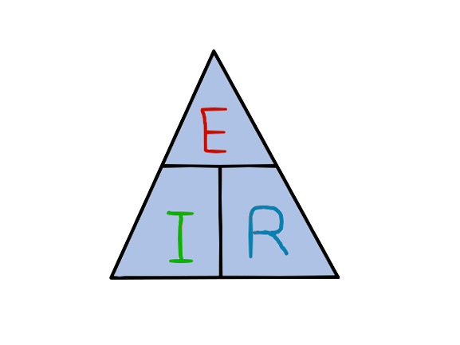

Ley de Ohm
La Ley de Ohm establece que la corriente que fluye a través de un conductor es directamente proporcional al voltaje aplicado a través de ese conductor y es inversamente proporcional a la resistencia del conductor. Esto significa que, si se mantiene la resistencia constante, un aumento en el voltaje resultará en un aumento en la corriente, y viceversa. Del mismo modo, si se mantiene constante el voltaje, una mayor resistencia reducirá la corriente, y una menor resistencia la aumentará. La Ley de Ohm es una de las leyes básicas de la electricidad y es esencial para comprender cómo funcionan los circuitos eléctricos y electrónicos en una amplia variedad de aplicaciones, desde dispositivos simples hasta sistemas de potencia complejos.
